'빛 속의 무엇이 색의 다양성을 보여 주는 것인가?'
'무엇이 물체를 결정하는가?'
'인간은 어떻게 색채를 느끼는가?'
수 세기 동안 많은 연구자들과 연구 업적은 위의 세 가지 물음에 답하기 위해서였다. 20세기 후반에 이르러 색채학의 관심과 연구는 사람을 중심으로 한 세 번째 물음인 '우리가 물체를 보았을 때 어떻게 뇌 속에서 이미지를 생성하는가?'에 집중되고 있다.
선조들은 시각과 색채 감각에서 미학적인 면과 과학적인 면을 모두 고려하였다. 그들은 사원과 집 그리고 무덤 속까지 색채로 장식을 하였는데 그것들은 현재 취향에도 맞는 것들이 많다 유럽의 선사 시대 동굴 그림들은 현대에도 지속되는 색채사용의 목적과 방법을 잘 보여준다. 알타미라와 스페인 후기 구석기 벽화에는 적색, 황색, 갈색, 검은색이 사용되었는데 이들 역시 위의 예를 보여 주는 것이다.
색채 장식의 또 하나의 예는 수메리 인과 바빌로니아인의 유물에서 확실하게 보여지는데 이집트의 6왕조와 12왕조 때 상당한 수준에 올랐음을 알 수 있다. 색채 팔레트는 사용 색채 수에서 녹색 보라색 그리고 이집트 파랑Egyyptian blue을 포함하여 대단히 증가하였다. 또한 크레타 문명의 프레스코에서도 우수한 색채가 발견된다. 헬레니즘문화에서는 회화와 벽화에서 이탈라인의 르네상스에 버금가는 장식이 오늘날까지도 남아 있다. 그리스인은 거리감perspective의 기초적인 원리를 이해하여 색채를 다양하게 섞어 사용하였다. 그 결과 금색, 하늘색, 주홍색, 청보라색 등을 표현하였다.
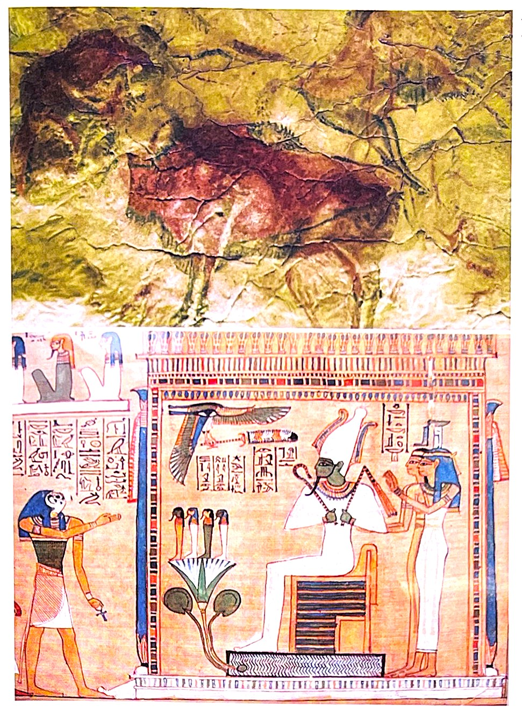(1) 알타미라의 동굴벽화
(2) 이집트의 파피루스 그림
지극히 현대적 의미의 색채의 치료적인 사용은 그 기원이 히포크라테스가 살았던 기원전 4세기로 거슬러 올라간다. 의학의 아버지라 불리는 히포트라테스는 색채 지각과 마찬가지로 뇌의 작용을 한층 심도있게 설명하였다. 그는 상처 치료에 연고와 다양한 색깔의 고약을 사용했다.
그리스의 과학자들은 수정체가 빛과 불타는 것을 응축하며, 빛의 직선적 운동을 전파시키고 반사와 굴절을 가능케 한다는 사실을 알아 냈다. 또한 그리스의 철학자 아리스토텔레스는 '색채는 빛과 눈과 관계가 있으며 광선이 물체로부터 나와 눈의 투명 성질이 있는 부분을 통과하여 눈의 안쪽 부분과 접촉하게 된다.'고 추측하였다. 아리스토텔레스의 학설은 현대적 의미와 비교해 보면 상당히 원리에 접근하였음을 알 수 있는 대목이다. 광원으로부터의 빛이 물체에 닿아 그 반사 빛이 눈에 들어오고, 눈에 들어온 빛은 눈의 내부에서 작용하고, 뇌의 인식 과정과 관계되어 있다는 현대적인 해석과 일맥상통한 것이다. 그러나 플라톤은 눈이 일정한 광선을 내보내 물체를 마치 손으로 만지는 것처럼 감지한다는 사실을 바탕으로, 아리스토텔레스의 학설과는 대조되는 학설을 내세웠다. 아마 물체는 외부에 존재하기 때문에 눈의 안쪽과는 관계가없다는 이유가 작용한 것으로 보여진다. 또한 아리스토텔레스는 색깔이 있는 수정, 고약, 광석, 물감을 사용하여 치료하도록 권했다.
현재는 아리스토텔레스의 학설이 받아들여지고 있으나 당시에는 플라톤의 해석이 로마 시대를 거쳐 중세 시대까지 주류를 이루었다. 아리스토텔레스의 학설은 바그다드와 바스라의 아라비아 학교에서 다시 출현하게 되는데, 그곳에서는 빛이 물리적 작용이라는 데 연구의 초점을 맞추었다. 이 사실은 알하젠Alhazen과 비텔로Witelo가 고대 기록물을 출판하면서 다시 등장하였는데, 이 책은 아랍인들이 기하 광학과 바늘 구멍 카메라의 원리를 이해하고 있었음을 기록하고 있다. 비텔로는 카메라 내부에 외부의 이미지가 거꾸로 보인다는 사실도 추측하였다. 그는 렌즈가 '이미지를 해석해서 역상으로 보인다.'라고 규정하였는데, 아무래도 원리를 이해하지 못한 것으로 보인다.
1세기경 로마의 전설적인 오렐리어스 코넬리우스 켈수스는 색깔을 더 널리 사용했다. 하지만 기독교가 전해진 이후 서양에서는 많은 고대 학식을 금지시켰고, 이를 해하는 사람을 ‘이단’으로 여겼다. 그 이후 르네상스 시기가 되어서야 중세시대에 팽배했던 미신이 새롭게 등장한 ‘과학’ 앞에 무릎을 꿇으며 색채요법이 발달할 수 있었다. 아리스토텔레스 시대를 뛰어 넘는한 차원 높은 과학이 등장한 이 시기에 비로소 색채 사용이 부활하여, 장식적인 용도뿐 아니라 치료용으로도 색채가 사용되었다. 그리고 색을 묘사하는 방법도 상당한 발전을 이뤘다. 초창기에 색을 묘사하는 용어들은 단지 그 색이 밝고 어두운지, 즉 검정색에 가까운지 회색에 가까운지만 나타내 주었다.
1604년 출판된 '비텔로를 보완한 천문학의 광학적 측면에 대한 해설Ad vitellionem Paralipomena'에서 케플러Johanes Kepler는 수학적으로 망막에서 외부의 이미지가 역상으로 보이는 것을 입증하였다. 이 원리는 기하 광학의 원리를 이해해야 하는 상당히 어려운 원리이다. 특히 당시의 실험 기계로는 더욱 어려운 일이었다. 빛과 굴절 그리고 투명체에서의 빛의 작용을 이해해야 한다. 케플러의 이 실험 결과는 영국 헤리오트Thomas Harriot의 실험 결과와 일치한다. 그는 상당한 실험 자료를 통해 굴절의 원리을 입증하였다. 헤리오트의 연구는 굴절의 원리에 접근하였지만 출판되지 못하고, 비슷한 연구에 성공한 스넬Willebrord van snell의 연구 역시 출판되지 못하였다. 그 결과들은 모두 프랑스의 철학자이자 과학자인 데카르트Rene Descartes에 의하여 '굴절 광학Dioptrice'으로 출판되었으며, 그의 책에서는 앞의 빛에 대한 연구 선구자들의 이론이 모두 소개되었다. 데카르트는 망막에 기하학적 상이 맺히면서 첫 번째 해석이되고, 두 번째는 뇌에 이르러 상이 재해석되는 과정을 물리학적으로 설명하였다. 세 번째 과정인 시각과 색채 지각은 물체와 관찰 매체의 상호 작용이며, 망막을 통해 이루어짐이 입증되었다.
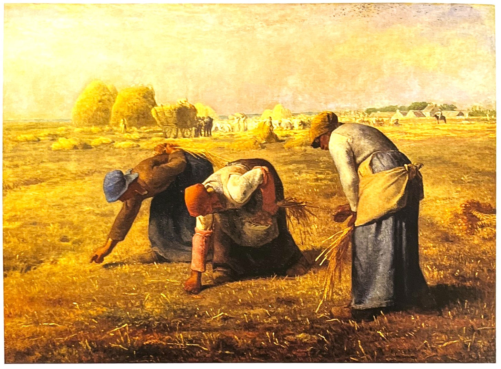밀레의 기념비적 1857년 작품 '이삭줍기'The Gleaners에서는 높은 수준에서 진행된 미묘한 색채의 변화는 독일 형식주의 비평의 표준 형식 가운데 하나를 이끌어냈다. 로렌츠 디트만은 1987년에 어떻게 다음과 같은 일들이 일어났는지 관찰했다. '중앙에 위치한 인물의 붉은 톤, 구리 빛의 붉은 기운이 주위를 감도는, 길색빛의 밝은 암적색 등 특히 억제돤 색채들이 가까운 순서에 따라서 단계별 장면으로 이어진다. 그리고 오른쪽에 서 있는 인물에 보이는 색감이 있는 회색의 매우 미묘한 차이, 은빛이 감도는 밝은 청회색, 비둘기빛 회색, 푸른 느낌의 터키색빛 회색도 마찬가지다. 각각의 색채는 그 문턱이 낮아 유도효과가 더 쉽게 만들어진다. 그리고 '공명' 처럼 보이는 무한 색채의 톤을 이끈다...'[5]
1600년대에 들어서서야 색채 이론이 미술가들에게 새롭고 흥미로운 무언가를 제공한 것으로 보인다. 색에 대한 미술과 과학을 통합해야 한다는 광범위한 움직임은 프라하의 루돌프 2새의 왕실에서 시작되어 약 2세기에 걸쳐 계속되었다. 예술kunst과 호기심wunderkammer 시기에, 회화와 판화에서의 색과 색들은 자연에 대한 경이로움과 비교되는 미술의 경이로움이었다. 루돌프를 둘러싼 몇몇 미술가들과 학자들은 색에 대해 관심이 있었으며 특히 음악과의 관계에 흥미를 보였다. 17세기에는 많은 미술가들이 색 이론에 열중하였으며 많은 색 이론가들은 계몽을 위해서 그림을 연구하였다. 1660년대에 프랑스 아카데미French Academy의 급성장 속에서 색 및 디자인과의 연관성은 형식적, 비형식적 논의들의 표준적인 주제였으며, 특히 페리비앙Felibien과 드 필De piles에 의해 중요하고 영향력있는 문헌들이 탄생하였다. 또한 데카르트의 연구, 특히 색은 착각일뿐이라는 뉴턴의 연구를 통해 빛과 색은 처음으로 빛이 유일한 시작이라는 통합된 이론을 찾았다. 그들은 색을 원형으로 배치한 것을 통해 궁극적으로는 '보색' 대비의 본질에 대한 단서를 얻을 수 있었다. 물론 대비는 주관적임을 보여준 것이 뉴턴의 가장 위대한 발견 중의 하나이다. 뉴턴의 색채 이론은 1670년 '왕립협회 회보'philosophical transaction of the royal society에 처음 발표되었는데, 무엇보다 로마와 파리의 화가들이 그들의 미술에 대한 연구에 더 공고한 이론적인 토대를 찾고 있었을 때 나타난 것이다.[5]
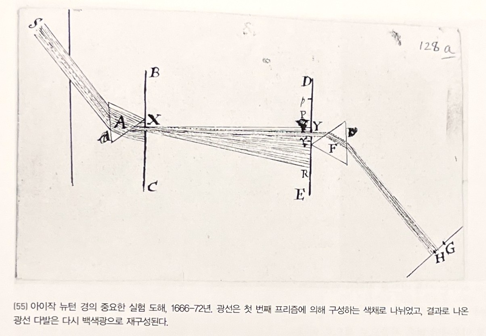아이작 뉴턴 경의 중요한 실험 도해, 1666-72년. 광선은 첫 번째 프리즘에 의해 구성하는 색채로 나뉘었고, 결과로 나온 광선 다발은 다시 백색광으로 재구성된다.
주관적인 현상으로서의 색에 큰 강조점을 둔, 색 연구에 있어 가장 광범위한 공헌은 1810년 발표된 괴테의 '색의 이론'Farbenlebre이다. 이 문헌은 미술가와 미술사가들에게 색에 대한 가장 중요한 한 문장을 포함하고 있다. 왜냐하면 화가였던 하인리히 마이어Heinrich Myer가 기고한 색의 역사적 개요(회화에 대한 최초의 저술)를 포함하여 '색의 역사에서의 재료'를 다루고 있기 때문이다. '색의 이론'에 대한 최근의 연구는, 색은 빛의 단독적인 기능에 의한 것이라는 뉴턴의 이론에 대한 괴테의 노골적인 반대라는, 오래된 주제를 환기시키려는 경향이 있다. 노랑은 밝음을, 파랑은 어두움을 의미하며 이 두 가지의 기본적 색이 작용하여 최고의, 고귀한 색인 빨강색을 만들어낸다는 반투명 매개체에 의한 괴테의 증강 개념은, 모든 색이 본질적으로 어두움의 방해가 없다면 백색광 자체라는 뉴턴의 원칙을 향해 시인이 공격할 수 있는 원동력이 되었다.
이 시기의 회화 이론의 대부분은 어느 정도는 반-뉴턴적이었다. 그래서 예를 들어 고령임에도 불구하고 터너가 뉴턴에 대한 대표적 반대자인 괴테의 이론을 연구하고 싶어졌다고 느꼈다는 것은 놀라운 일이 아니다. 그러나 색에 대한 터너의 이론은 전통적인 것과 현대적인 요소들을 완전히 색다른 방식으로 섞어 놓았기 때문에 관련된 주요 주제들을 그가 얼마나 이해했는지는 아직도 해결되 않은 문제이다. 독일의 분쉬Wunsch와 영국의 영Young이 가산적 혼합과 감산적 혼합에 대한 개념을 분명히 하게 된 것은 세기 말에 이르러서이며, 이러한 생각들은 또 다른 반세기가 지나지 않아 받아들여지게 되었다. 1920년대의 몬드리안에 이르러서야, 색채 전체는 감산적인 기초들인 빨강, 노랑, 파랑으로 상징화되었다.[5]
1971년 덴마크의 인류학자 쿠셀R. Kuschel과 몬버그T. Monberg가 먼셀 색채 세트로 무장하고 폴리네시아에 있는 벨로나Bellona 섬에 도착하였다. 색채 세트를 들고 간 그들이 섬 주민으로부터 들을 수 있었던 말이라곤 단지 '우리는 여기서 색채에 대해 별로 말하지 않아요'였다. 이 사건에서 이들의 보고서는 제한된 문화 영역 내의 색채 용법에 대한 가장 현대적 연구 중 하나임에 틀림없다. 하지만 색채가 모든 사람의 관심이 아니고, 게다가 많은 맥락에서 우리가 색채없이도 완벽하게 잘 살 수 있음을 분명하게 보여준다. 그래서 실생활에서 기능상 큰 장애가 거의 없기 때문에, 색맹은 여러 해 동안 인지되지 않은 채 넘어갔을 수 있음은 잘 알려져 있다.
게다가 몇몇 유럽과 동양의 문화에서, 색채에 대한 경멸은 오히려 세련됨과 탁월함을 의미했다. 예를 들어 검정 옷에 대한 취향은 르네상스 시대에 부와 고상함의 특권이었고, 후에 유럽 사회 모든 계층에 퍼졌다. 검정은 여전히 어떤 경우 우리의 복장 규정의 일부를 형성하고 있다.[5]
한편 빈센트 반 고흐가 자신의 컬렉션에 몇몇 일본 판화의 채색 버젼을 만들고 더 미묘하고 은근한 색채 조화를 위해 일부러 눈에 거슬릴 정도로 불쾌한 보색으로 색깔을 대체했을 때, 그것이 우리에게는 무지와 천박함의 사례인 것처럼 보인다. 그러나 강렬하고 충만한 '원색'에 대한 사랑이 원시인이나 어린아이의 것만은 아니고 정규 교육을 받은 유럽의 일반 성인들 사이에서도 일반적인 것이었음을 보여준 것은 반 고흐가 살았던 시대의 실험심리학의 중요한 성취 중 하나였다. 현대 미술에서 색채를 해방시킨 것이라 종종 오해받는, 보색 사용에 관한 폭발적인 관심의 배후에는 기술적인 발전뿐만 아니라 이러한 심리적인 차원도 있었던 것이다.[5]
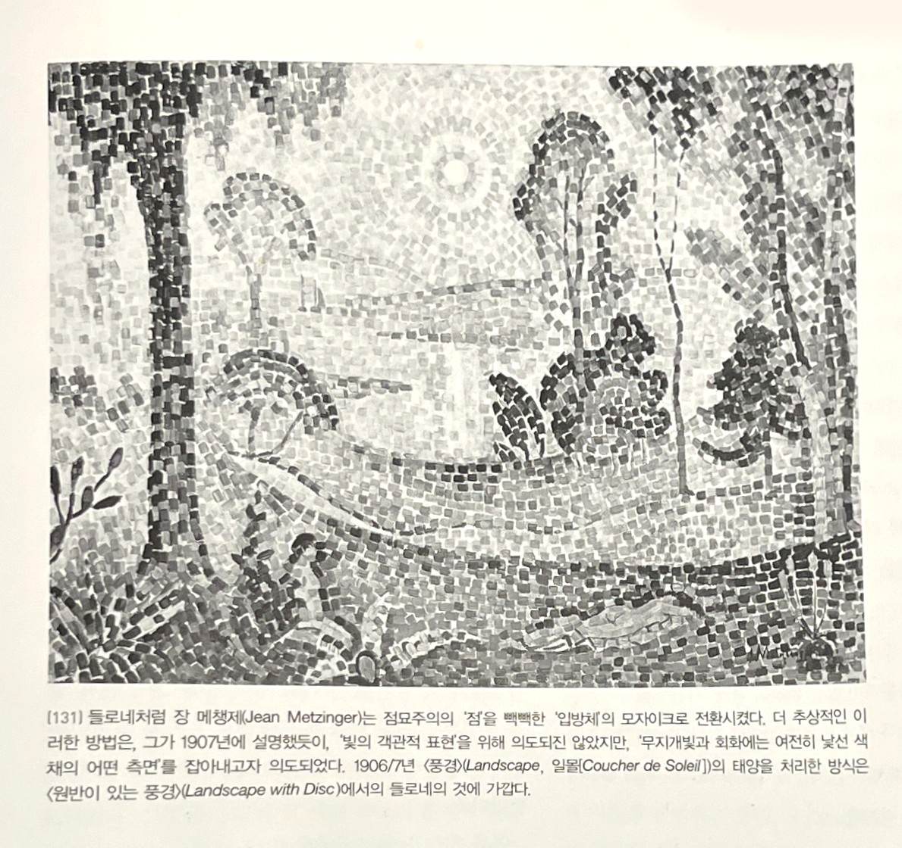들로내처럼 장 메첸제(Jean Metzinger)는 점묘주의 '점'을 빽빽한 '입방체'의 모자이크로 전환시켰다. 더 추상적인 이러한 방법은 그가 1907년에 설명했듯이, '빛의 객관적 표현'을 통해 의도되진 않았지만, 무지개빛과 회화에는 여전히 낯선 색체의 어떤 측면을 잡아내고자 의도되었다. 1906/7년 (풍경)(Landscape, 일몰[Coucher de Soleil])의 태양을 처리한 방식은 (원반이 있는 풍경)(Landscape with Disc)에서의 들로네의 것에 가깝다.[5]
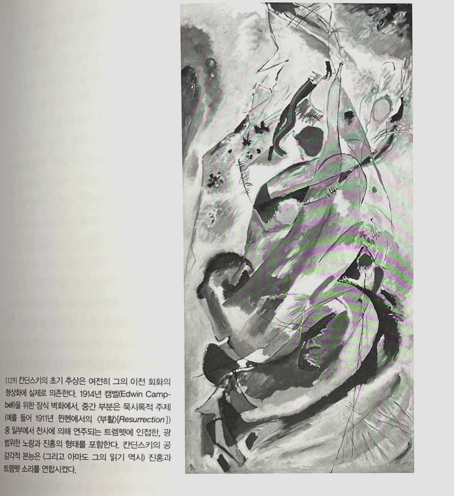칸딘스키의 초기 추상은 여전히 그의 이전 회화의 형상화에 실제로 존재한다. 1914년 캠벨(Edwin Campbell)을 위한 장식 벽화에서 중간 부분은 묵시록적 주제 (예를 들어 1911념 뮌헨에서의 (부활)[Resurrection] 중 일부에서 전시에 의해 연주되는 트럼펫에 인접한, 광범위한 노랑과 진홍의 형태를 포합한다. 칸딘스키의 공감각적인 본능은 (그리고 아마도 그의 읽기 역시) 진홍과 트럼펫 소리를 연상시켰다.[5]
1828년 프랑스 화학자 슈브뢸은 색에 대한 드의 최초의 논문 '두 색을 동시에 바라보았을 때 각각의 색이 서로에게 미치는 영향에 대한 논고'Memoir on the influence that two colors may have on each other When they seen simultaneously를 발표한다. 슈브뢸은 이 논문에서 '동시 대비 효과의 법칙'과 '연속 배비 효과의 법칙'을 발표했다. 그런데 이 법칙들은 슈브뢸이 논문을 발표한 날부터 그의 생각이 화가들 사이에서 회자되던 1850년대까지 고블랭에서 격년 코스로 진행된 슈브뢸의 대중 강연을 통해 대규모로 확산되었다. 10년 후에 슈브뢸의 기념비적인 연구저작 '색의 동시 대비 법칙에 대하여'On the law of simultaneous Contrast of Colours가 발표되었을 때 '예술가'L'Artiste같은 여러 전문적인 저널에서 그의 이론을 다루었을 뿐만 아니라, 그의 강연은 파리의 '살롱전'에서 '모든 예술가들에게 도움이 되는 과정'으로 광고되기도 했다.[5]
색채용어와 색 산출물[5]알폰소 드 모리나는 약 14개의 나후아 색채 용어들을 목록으로 만들었는데, 잉카 언어인 퀘추아Quechua와 아이마라aymara는 각각 16세기에 이 용어들 중에서 12개를 사용하고 있었다. 흥미롭게도 퀘추아는 특별한 용어를 갖고 있었는데 검은색과 흰색의 조합에 대한 두 개의 구분되는 단어가 있었다. 검은색과 흰색의 바둑판 패턴이 잉카 직물에 얼마나 자주 사용되었는를 보면 놀라울 정도이다. 잉카의 직물뿐만 아니라 아즈텍의 토날라마틀tonalamatl에서 볼 수 있는 매우 복잡한 형태와 색채의 배열은 그들의 광범위한 장식적 색채에 대한 선호뿐만 아니라 그들이 이것들을 구별하고 잘 대비시키는 능력을 가지고 있음을 보여준다.
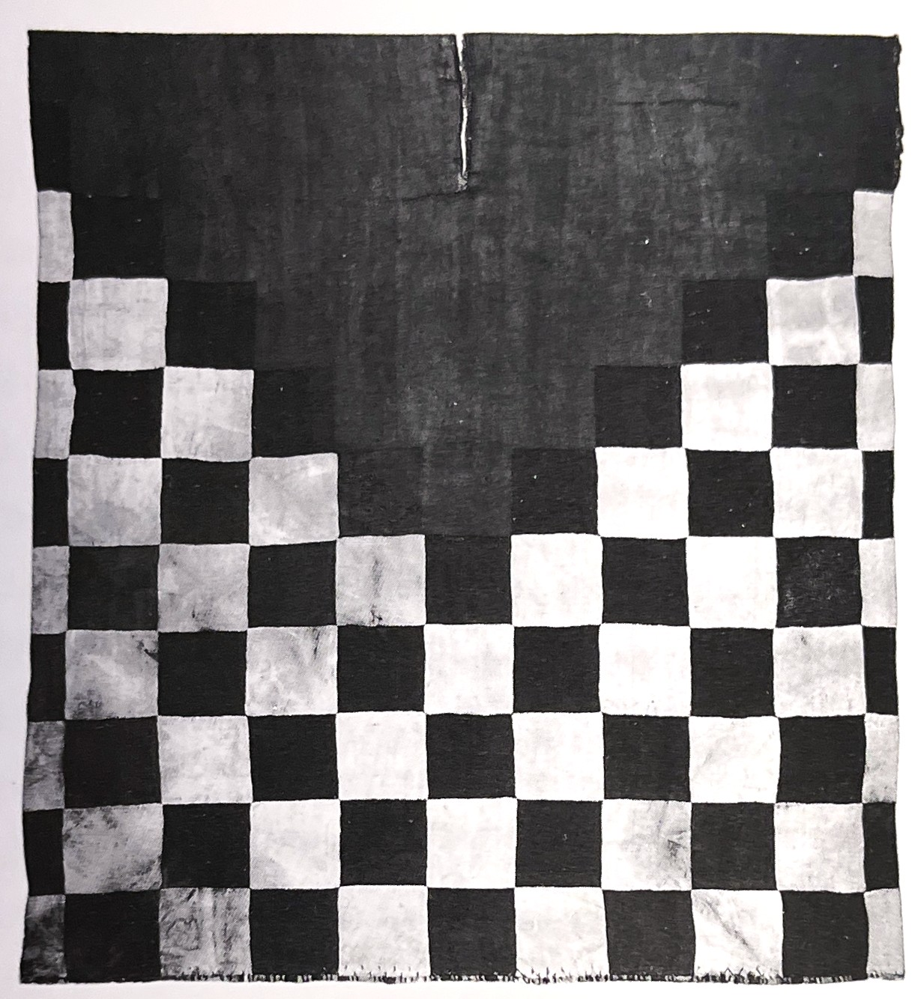전형적인 흑-백의 단계적 디자인으로 짜여진 잉카 판쵸. 잉카의 한 언어인 퀘추아는 '흑과 백'에 대한 특별한 용어를 갖고 있으며, 이 바둑판 모양의 주제이기도 하다.
색채에 민감했던 아즈텍인들의 특성을 보여주는 가장 분명하고 흥미진진한 예는 그들 자신의 공예품일 것이다. 복잡하게 엮어서 짜는 형태의 토날라마틀은 열두 가지가 안되는 색을 사용하여 색채 영역의 섬세한 배치를 요구하는 것이었다. 페루 파라카스 사막의 묘지에서 출토된, 놀라울 정도로 잘 보존된 직물들은 현대 학자들로부터 가장 많은 주목을 받고 있다. 오닐L. M. O'Neale에 의한 분석은 복잡한 조각천들을 이어 맞춘 세공 작품에 대해 이루어졌다. 이 작품은 반복되는 재규어 무늬로 구성되었으며 그녀는 여기에 총 17개의 미묘하게 다른 색들이 사용되었음을 밝혀냈다.
색채와 방향[5]상징적으로 색을 사용한 공통적인 예 중의 하나는 색을 방향으로 귀속시키는 경우이다. 이는 아시아와 미국에서 널리 퍼진 관습이었고, 멕시코의 마야와 아즈텍 사이에서 특히 그러하였다.
인류학자인 릴리C. L. Riley가 수집한 많은 사례에서 보면 북쪽은 검은색, 흰색, 발간색, 노란색, 파랑 또는 회색으로 상징화되며 남쪽은 파랑, 빨강, 검정, 흰색, 녹색 또는 노랑과 연결되었다. 동쪽은 흰색, 노랑, 파랑, 회색 또는 녹색과, 서쪽은 검은색, 흰색, 노랑, 빨강, 파랑이나 녹색과 연결되었다.
마야인들 사이에서 남쪽과 동쪽은 모두 빨강이나 노랑으로 알려져 있었으며 아즈텍의 기록에서 우리는 북쪽을 검은색, 흰색, 노랑이나 빨강으로, 남쪽을 파랑, 빨강이나 노랑, 동쪽을 빨강, 녹색-흰색 또는 노랑, 서쪽을 흰색이나 검은색, 노랑, 발강 또는 녹색으로 싱징화한 것을 발견할 수 있었다.
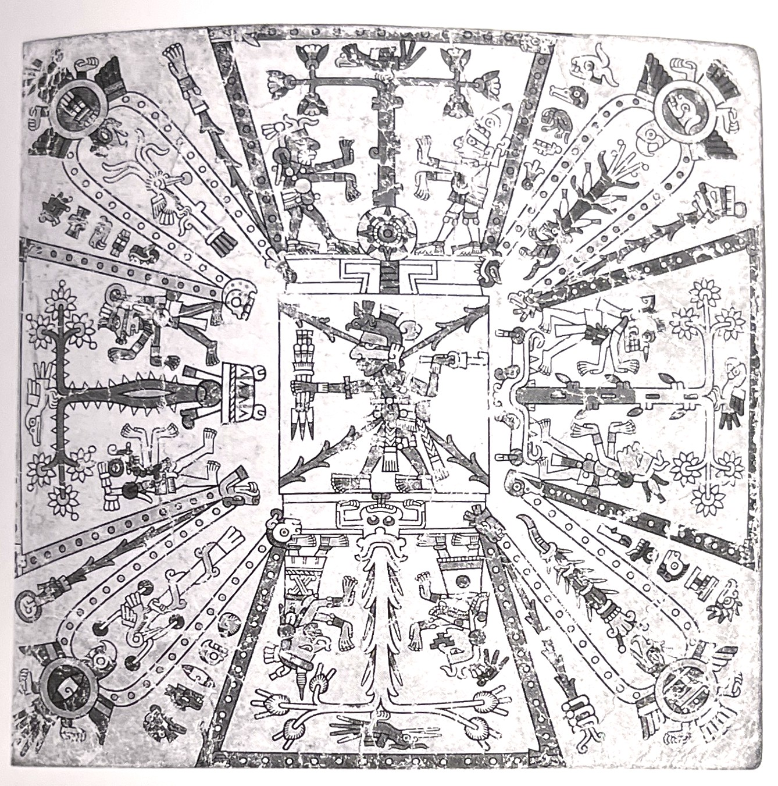네 개의 주요 방위 가가을 색으로 구분한 아즈텍의 장대한 지도. 북쪽(오른쪽)은 노랑, 남쪽은 녹색, 동쪽은 빨강, 그리고 서쪽은 파랑으로 구분되어 있다.
현대 비평가들은 유일하게 남아 있는 기록인 보르지아 고문서codex borgia에서, 방향을 의미하는 색이 페이지마다 다르다는 점에 놀랐다. 릴리는 지금까지 자주 사용되는 용어들에서 발견된 문제들을 요약하였다.
중앙아메리카와 남서쪽 영역 전체에 걸친 색의 방향 상징화에 관한 가장 놀라운 점 중의 하나는, 하나의 문화와 다른 문화의 연합에 통일성이 결여되었다는 것이다. 심지어 동일한 집단 내에서도 두 명의 정보 제공자가 서로 다른 색채와 방향을 연결지었다.
그녀는 이러한 불일치가 서로 다른 의식에서 다른 언어를 사용하기 때문에 생기는 것이라 생각했으며 실제로 그것은 사실이었을 수도 있다. 그러므로 더 심층적인 조사가 필요하다. 그러나 색채 인지에 대한 본질적인 불안정성과는 별도로, 우리는 파랑과 녹색의 경우는 말할 것도 없고, 우리가 빨강을 보고 있는지 노랑을 보고 있는지 결코 확신할 수 없기 때문에, 콜럼버스 이전의 색의 상징에 대한 이러한 불안정성은 유럽의 중세와 르네상스의 예와 정확히 그 궤를 같이 한다. 그리고 이러한 불안정성은 채색된 상징적 대상 작품에 대해 책임을 져야하는 미술가 개인의 상상력 그 이상의 것을 요구하지 않는 데서 기인한 것일 수도 있다.
색채 심리 연구의 역사다양하게 채색된 빛에 대한 노출이 인간의 신체 기능에 직접적이고 변화 가능한 효과를 가질 수 있다는 믿음은 아마도 1880년대 프랑스 심리학자 페레Charles Fere의 정량화된 실험에서 처음으로 제안되었을 것이다. 페레는 빨간 빛이 가장 많은 자극 효과를 가지고 있고 보라 빛이 가장 많은 진정 효과를 가지고 있음을 발견했다. 색채 요법은 세기가 바뀔 무렵 유럽에서 가장 크게 유행했던 것처럼 보이나 여전히 대체의학 분야에서 때가 되면 논의되는 하나의 레퍼토리에 불과하다. 생리학자 카이저의 리뷰가 암시하듯이, 색채 요법은 체계적인 분석에 매우 저항적인 것으로 증명되었다. 그러나 실험실 검증에 근거한 색채 선호의 비연합적 척도를 배제시키려 한 색채 심리학의 또 다른 갈래는 폭넓게 받아 들였다. 아마도 상업적 목적을 위한 강력한 마케팅 조직에 의해 촉진되고 사용되기 때문일 것이다.[5]
이런 척도 중 가장 친숙한 것은 아마도 1940년대에 스위스 심리학자 뤼셔Max Lusher에 의해 고안된 것일 수 있다. 그가 조직한 이 척도는 현재 기술적 민족학 연구, 의학 진단 및 치료, 노인학, 결혼 상담, 인사 선발에 널리 쓰인다고 한다. 완전 검사는 73개의 색채 조각을 사용하지만, 더 짧고 편리한 버젼의 단축 검사는 단지 여덟 가지 샘플만을 사용한다. 이러한 과정을 거쳐 파랑이 유럽인들 사이에서 가장 선호되는 색채임을 확인하였고 이는 현대 심리학자들 사이에서도 마찬가지다.[5]
뤼셔 검사가 그 검사의 독단성, 그리고 특히 다양한 판본의 컬러 샘플에 단일한 표준을 제공하지 못한 것에 대해 심리학자들로부터 수많은 비판을 받은 것은 그리 놀랍지도 않은 일이다. 문화사가가 볼 때 이 검사의 주된 약점은 색채에 대한 심리적 반응이 주로 색깔의 이름에 대한 것인가 하는 점이다. 그래서 이러한 반응이 그 색채만이 가지는 특수한 외형에 대한 것이라기보다는 각각의 색채명이 주는 일반적 개념에 대한 것인가하는 결정적 의문에 대한 고려가 없다는 것이다.[5]
생리적 기능에 대한 색채의 효과에 대한 연구, 19세기 후반에 유럽에서(그리고 특히 칸딘스키에게 관심이 있었던, 색채요법의 형태로) 특히 활성화된 연구의 갈래는 또한 이 치료가 몇몇 국가에서 여전히 시술되는 대체의학의 형태일지라도 놀랍게도 결정적이지는 못한 것임을 입증하였다. 한 세기 동안의 연구는 빨간 빛에 노출이 맥박수를 증가시키고, 파랑 및 보라색이 맥박수를 저하시킨다는 것 정도만을 보여주는 것처럼 보인다. 심리검사에서 색채의 사용은 또한 현대의 실제 사용에 크게 관련돤 것이기도 하다. 뤼셔 검사에 따르면 '완전한 정상성의 표면지표'를 제시해 주는 순서는 가장 광범위한 용어로 수천 명의 피검자를 데리고 실행한 초기 검사의 결과와 밀접하다. 널리 사용된 뤼셔의 검사는 우리가 보았듯이 정확성과 구체성의 결여로 많은 비판을 받는다. [5]
20세기 색채 지각의 연구는 과학적 배경에 의하여 시작되었다. 망막이 불안정하고 변화가 많음을 확실하게 알고 있었으며 가시 광선에 대한 연구가 인간의 수용기 문제라는 새로운 국면에 접어 들게 되었다. 이러한 수용기가 뇌로 하여금 세 개의 다른 색채 지각 요소를 갖게 하였으며, 그것은 그라스만이 제기한 색상, 포화도, 명도이다. 여기서 최초로 우리가 흔히 부르는 색상, 명도, 채도의 개념이 형성된다. 그것의 생성은 색이 우리의 눈에 들어올 때 인식되는 색마다 강도와 단색광에 의한 색채 영역이 다르기 때문에 그 정도 차이를 가지게 되는 것이다.[4]
이 이후로 색상의 명암과 더불어 채도 역시 고려대상이 되어서, 하늘의 푸른 색상, 숲의 초록 색상, 상처에서 보이는 와인 빛의 붉은 색상도 모두 고려하여 색을 표현했다. 이와 동시에, 다채로운 색상의 광물 조각들을 접착제로 붙여서 만든 거대한 태피스트리장식 벽걸이 와 벽화도 발명되었다. 색채에 대한 현대적인 해석은 유명한 수학자이자 과학자인 아이작 뉴턴Isaac Newton경의 업적에 뿌리를 두고 있다. 1666년 뉴턴은 프리즘을 통해 빛을 통과시키는 실험을 한 후에, 백색광이 여러 색깔로 구성되어 있다는 새로운 이론을 제기했다. 뉴턴은 빛이 일곱 색깔로 이루어진 스펙트럼으로 구성되어 있다고 최초로 생각한 사람이다.[1]
색의 3요소는 각기 독립적으로 서술되고 인식될 수 있다. 즉 선명한 빨강, 연한 빨강, 회색에 가까운 낮은 포화도의 회빨강 등으로 포화도를 인식하게 되는데 이들 포화도는 나중에 채도로 정의된다. 이들은 각기 요소로 구별할 수 있지만 색채 영역에서는 무단계로 지속적으로 연결되어 분포한다. 그리고 이들 색의 연결은 무한한 색으로 입체 공간을 구성하고 약 100만 가지 이상의 색을 표현한다. 그렇다면 뇌는 어떻게 이들 3요소인 색상, 포화도, 명도를 연결해서 물체색을 인식할 수 있을까? 이 물음에 대한 대답은 우리의 관심을 물리에서 뇌의 심리적 분야와 생물학적 분야로 돌리게 된다. 색은 오늘날 심리 검사에도 널리 쓰인다. 이 순간에도 색채 요법과 색채 이론의 역사는 계속 발전되고 있다.[4]
괴테[4]19세기에 출현한 색의 심리학적 관심은 인간의 색체 지각에 관한 문제 해결을 위한 심도 있는 연구를 촉진시켰다. 색상환에서 3원색을 원주에 일정하게 배치하고 그들을 연결 시켰을 때 색채는 연속성 있는 순환계가 된다. 그 경우 원주의 반대에 있는 색과 반대적 성격을 갖는다는 의미로 연속성과 반대색의 개념을 해석할 수 있다. 연속적인 색상환에 있는 빨강을 흰 바탕 위에서 보다가약 10초 빨강이 사라졌을 때 그 빨강 자리에는 밝은 청록색의 잔상이 보인다. 이 두 개의 색은 보색으로 짐작할 수 있으며 이를 심리 보색이라고 한다. 물론 검정과 하양 또한 보색이며 노랑과 파랑 역시 그렇다.
이 보색 개념은 괴테가 색채 관찰을 서술한 문장에서 볼 수 있다.
무렵 여관에 들어 갔을 때 아주 예븐 검은색 머리칼을 가진, 스칼렛scarlet색 옷을 입은
소녀가 방으로 들어왔다. 내 앞에 반쯤 그림자를 드리운 그 소녀를 주의 깊게 바라보았다.
그리고 그녀가 돌아서 갔을 때 나는 내 앞에 남은 흰 벽을 보게 되었다. 그때 나는 검은 얼굴과
완전한 형태를 갖춘 아름다운 바다색의 옷을 보았다.
위의 경험은 괴테에게 특별한 경험이 되었다. 그래서 그는 그의 책에서 물리적 측면보다 심리적 측면을 강조하여 빨강과 초록을 서로 강한 보색 관계에 있는 색이라고 규정하고 그들 중 하나의 자극이 사라졌을 때 다른 하나가 출현한다고 설명하였다.
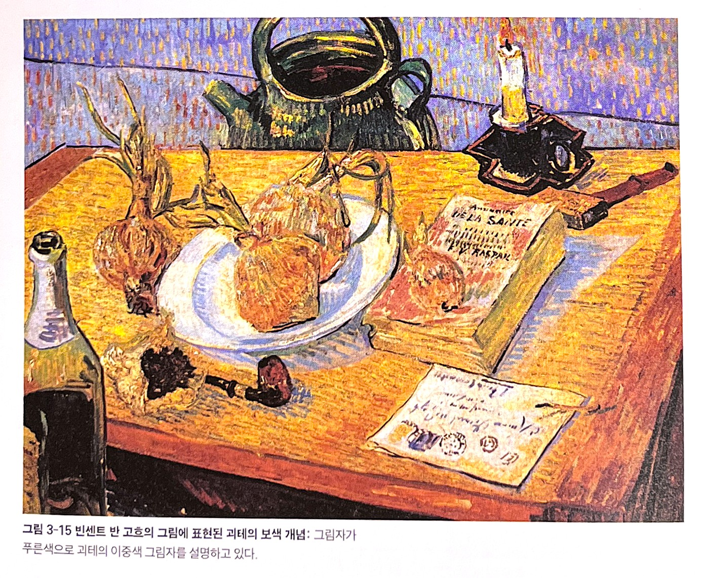빈센트 반 고흐의 그림에 표현된 괴테의 보색 개념: 그림자가 푸른색으로 괴테의 이중색 그림자를 설명하고 있다.
독일 모더니즘과 괴테의 이론[5] 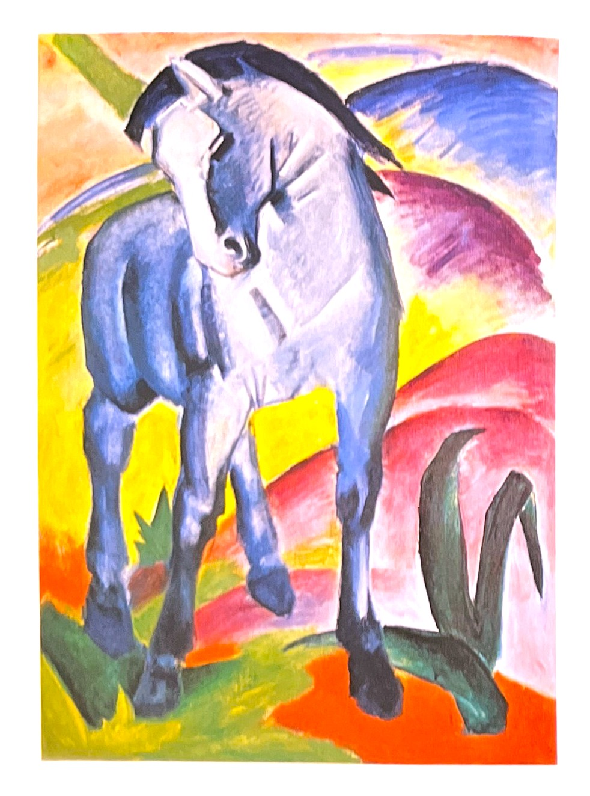프란츠 마르크와 칸딘스키는 모두 탁월한 낭만주의의 색인 파란색이 남성적 성격이라는 것에 동의하였다. 칸딘스키는 [청기사](Der BlaueReiter)라는 이름의 연감 서문에서 '우리 둘 다 파랑을 사랑했다. 마르크는 말을 사랑했다. 나는 기사를 사랑했다. '라고 언급하였다[파랑 1, 1911]
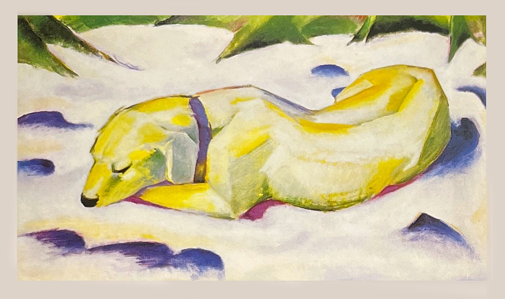아마도 1910~1911년 괴테의영향으로 마르크는 그의 개 루시(Russi)를 프리즘을 통해 보여지는 대로 그렸응 것이다.그의 설명에의하면, 밝음과 어두움의 경계에 채색된 주변을 포함시켰으며 이는 노랑, 흰색과 파랑 사이의 대비를 연구하기 위해서이다.
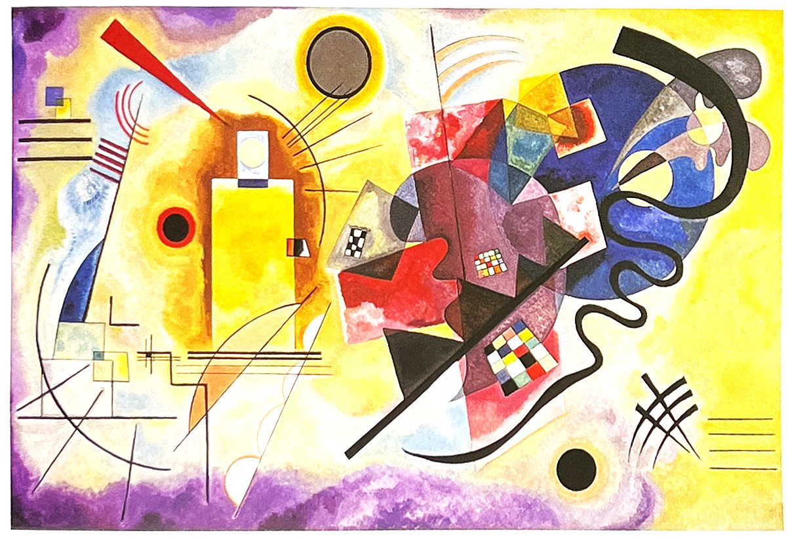1925년 [노랑-빨강-파랑]: 그 당시 바우하우스의 교수였던 칸딘스키는 괴테 이론의 더 심화된 측면을 예로 보여 주었다. 그는 괴테의 [색이론]에서 묘사된 대로 노랑(밝음)과 파랑(어두움)의 '증가(steigerung)'를 통해 빨강을 만들었다.
헤링[4]색채 심리의 문제들은 19세기 후반에 헤링에 의하여 완성된다. 그는 빨강색광과 초록색광이 균형을 이루어 반응하였을 때 노랑광원을 만들며, 그 결과는 빨강색광도 초록색광도 아니라는 것을 역설하였다. 마찬가지로 그는 노랑색광과 파랑색광의 보색 관계, 하양과 검정의 보색 관계에 대해서도 설명하였다. 즉 세 쌍의 색채보색설을 입증하였다. 그는 눈의 망막에 반대색 감지 기능이 있다고 생각하고, 그것을 빛의 수용기라고 생각하였다.
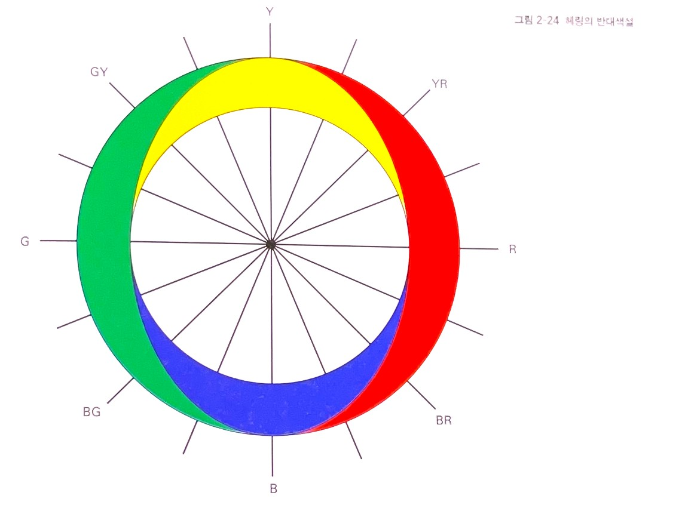광각 수용기의 3가색 수용기가 있다. 그러나 이 3가색 수용기는 각각 조합하여 쌍을 이루면서 반대색 시스템을 성립한다.
이러한 가설은 초록빛 빨강, 파랑빛 노랑 등이 성립할 수 없었고, 실제로 노란빛 초록, 초록빛 파랑 등이 성립되어 충분한 설득력을 가졌다. 빛을 혼합할 때 초록광과 빨강광을 혼합하면 노랑광이 나오고 파랑광과 노랑광을 혼합하면 백색광이 나온다. 원래의 색광이 갖는 빛의 색은 찾아볼 수 없다. 그러나 세 번째 조합인 검정과 하양의 조합은 물감의 원색 혼합과 같이 회색을 만든다. 이 원리는 맥스웰이나 헬름홀츠의 이론과도 같음을 시사하였다. 이 결과는 20세기 전반까지 허비치와 제임슨에 의해 재현되고 많은 입증적 연구가 계속된다.
오늘날 헤링의 반대색설은 우리 인간이 색채를 지갹햐는 중심적 학설이 되었다. 이런 이유는 색채지각설 중 색맹에 관련한 부분에서 직접 입증된다.
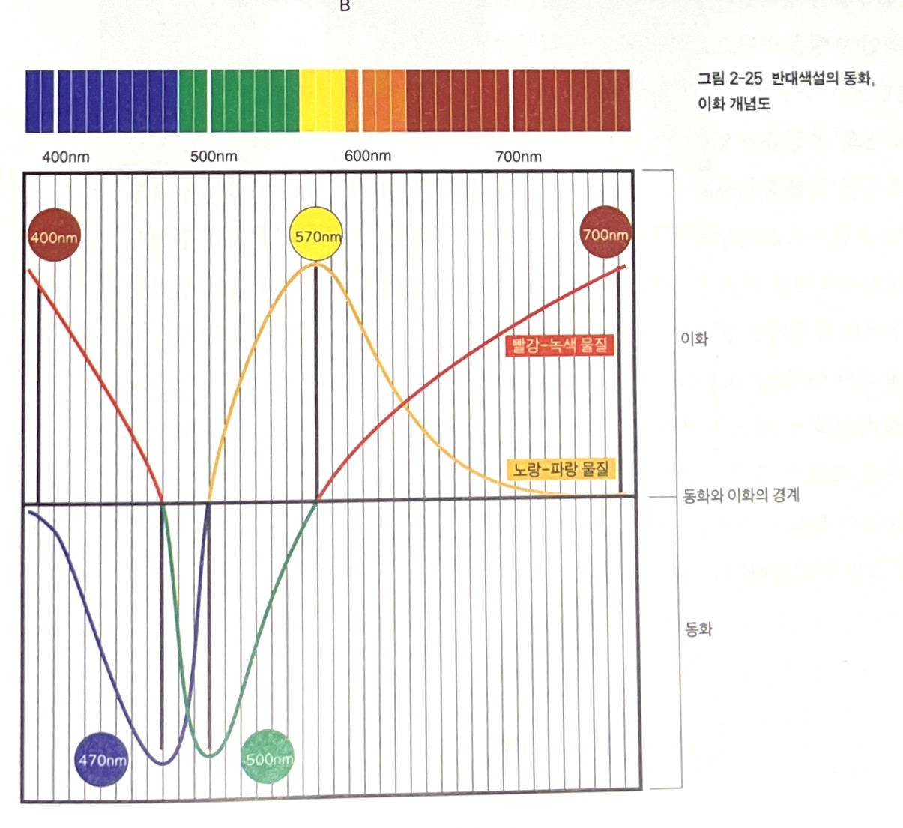헤링의 색상환
색채지각설[4] 3원색설trichromatic theory3원색설이란 토마스 영이 1802년 발표하고 헬름홀츠Hermann Luwiig Ferdinand von Helmholtz가 1868년 완성시킨 색각 이론이다. 토마스 영은 3원색의 기본 원색을 빨강, 노랑, 파랑이라 하였다. 그러나 헬름홀츠가 빛의 기본색을 빨강, 초록, 보라라고 주장하고 토마스 영의 이론을 수정하였다. 이것을 영 헬름홀츠설이라고 한다. 이 이론은 망막에 파장별로 분해 특성이 다른 세 종류의 물질이 있다고 정의하고 있다. 각각의 최대 감도는 장파장, 중파장, 단파장이며, 각각 일으키는 감각은 빨강, 초록, 파랑에 가장 가깝다. 빛이 망막에 이르면 각각의 특성을 지닌 세 종류의 빛의 수용기가 어느 정도씩 반응하는가에 따라 RGB의 양이 구헤진다. 세 종류가 모두 반응하면 흰색, 모두 반응하지 않으면 검은색, 그리고 세 종류 신경 반응량에 따라 무한의 색이 느껴진다. 3원색설은 색을 섞기 위한 혼합설에 유래하여 모니터 또는 색채분해기 등 여러 가지 장치를 개발하는 기틀이 되었다.
반대색설system of color opponency1874년 헤링이 발표한 반대색설은 빨강-초록, 노랑-파랑, 하양-검정의 세 쌍의 반대색을 색의 기본 감각으로 가정하고 있다. 예를 들어 3원색설에 의하면 노랑은 빨강과 초록의 출력 합성으로 이루어지지만 노랑에서는 빨강과 초록을 느낄 수 없다. 이렇게 보색잔상은 3원색설에서는 잘 설명할 수 없다.
헤링은 망막에 하양-검정 물질, 빨강-초록 물질, 노랑-파랑 물질이라는 세 가지 구성요소가 있다고 가정하고, 각각의 물질은 빛에 따라 동화재합성와 이화분해라고 하는 대립적인 화학적 변화를 일으킨다고 하였다. 동화는 검정, 초록, 파랑을 나타내고, 이화는 하양, 빨강, 노랑을 나타내고 있다.v
예를 들면 570nm의 빛은 노랑과 파랑 유닛에서 이화가 일어나는 경우에 노랑이 생기고, 빵강과 초록 유닛에서는 이화 작용으로 초록이 생긴다. 따라서 노랑과 초록의 출력에서 그 빛은 연두로 느껴진다. 또 470nm의 빛은 노랑과 파랑 유닛에서 동화 작용이 일어나 파랑이 생기며, 빨강과 초록 유닛에서는 동화와 이화가 균형이 생겨 무색이 되고 이 빛은 파랑으로 보인다. 또한 하양과 검정 유닛은 명도 레벨에 대응하여 동화는 하양, 이화는 검정, 중간은 회색이 된다. 회색의 경우는 거기에 검정과 하양의 양쪽 색이 느껴진다고 가정할 수 있다. 반대색설은 순응, 대비, 잔상 현상으로 색각 현상을 설명하기에 좋다.
단계설단계설에서 망막 단계는 3원색설로, 그 이후의 신경 단계에서는 반대색설을 따른다. 1920년대 이 후 여러 연구자가 제창한 색각 이론은 네델란드의 의학자 돈더스Franciscus Conelis donders가 제안한 단계설의 변형이다. 특히 돈더스는 헬름홀츠와 함께 안구에 관한 많은 연구를 수행하였다. 여기에서는 제임슨Dorothea Jmeson과 허비치Leo M. Hurvich의 모식적인 모델을 바탕으로 다음과 같이 설명할 수 있다.
제1단계는 추상체에 따른 빛의 RGB 분해 과정이다. 추상체에는 L, M, S의 세 종류가 있다. 즉 빛 속에 포함된 빨강, 초록, 파랑 성분을 세 종류의 추상체로 측정한다. 빨강과 초록의 추상체의 출력은 감법 혼합으로 R-G유낫을 형성하며 가법 혼합으로 노랑유닛을 만든다. 제2단계는 파랑 추상체의 출력은 앞에서 형성된 노랑 유닛과 감법 혼합하여 Y-B유닛을 형성하게 된다. 특히 파랑 추상체는 빨강 추상체의 출력에도 영향을 주어 R-G유닛의 R의 색에 영향을 준다. 반대편 감지 시스템의 네 개의 색 유닛Y, B, R, G중 다른 추상체의 영향을 받지 않고 추상체의 자극이 바로 연결된 유닛의 원 자극은 파랑, 초록이며 Y, R유닛은 두 개 이상의 추상체의 합의 결과이다. 이렇게 세 개의 추상체와 반대색 감지 시스템은 연결된다.
이와 같이 동화와 이화를 거쳐 3원색 추상체에서 4원색의 시지각 신경 경로로 이동되는 과정을 단계설이라고 한다.
[참고문헌]:
[1] 컬러, 그 비밀스러운 언어 COLOR, 조앤 액스터트, 아리엘 엑스터트, 신기라 옮김, 시그마 북스, 2014.9.10.
[2] 몸과 마음을 치료하는 색채, 릴리안 베르너 본즈, 번역 한창환, 도서출판 국제, 2008.1,10.
[3] 좋아 보이는 것들의 비밀 편집&그리드, 이민기 지음, 길벗, 2015.5.1., p262~263
[4] 색채 디자인 교과서, 문은배 지음, 길벗, 2010.12.28
[5] 색채의 역사-미술, 과학 그리고 상징, 존 게이지 지음, 박수진 한재현 옮김, (주)사회 평론, 2011. 5.11
....
....
....
....
....